12 - Infrastructure and DevOps
Built as-built · Target (not yet in any repo)
12.1 Environments and hosts
| Env | Frontend | API | Config |
|---|---|---|---|
| development | http://localhost:5174 (pnpm dev) |
http://localhost:9200 (make run with air hot reload) |
development.yaml, .env |
| staging | Target(no separate Vercel target yet) | https://be.mvip-league.com per staging.yaml |
Cautionstaging.yaml = production.yaml (same hosts), so staging needs its own hostnames |
| production | https://www.mvip-league.com (Vercel) |
https://be.mvip-league.com |
production.yaml + env vars |
DNS: Cloudflare for mvip-league.com. www points to Vercel; be points to the GCP load balancer (Target manifests).
12.2 Frontend pipeline (Builtleague-fe/.github/workflows)

- Secrets:
VERCEL_TOKEN,VERCEL_ORG_ID,VERCEL_PROJECT_ID. Vercel env:VITE_API_URL. vercel.json: buildpnpm build, outputdist, git deployments disabled, SPA rewrite (except icons, manifest,assets/), security headers,/assets/*immutable for 1 year,/sw.jsno-cache.- Concurrency: deploys queue rather than cancel.
- Rollback:
vercel rollback. - Post-release checks (README): sign in, open a deep link, and confirm logout sends
X-CSRF-Token.
12.3 Backend pipeline (Builtleague-be/.github/workflows)

- Auth to GCP: Workload Identity Federation. Pool
github-pool, providergithub-provider(project number 225614846438), service accountgithub-actions@vincent-mini-apps-project.iam.gserviceaccount.com. - Image:
asia-southeast1-docker.pkg.dev/vincent-mini-apps-project/league-repository/league-service:<tag>. The build argVERSIONis stamped into the binary and shown by/health. - Dockerfile:
golang:1.26-alpinebuilder (CGO off,-trimpath -s -w) →gcr.io/distroless/static-debian12:nonroot. Exposes 9200 (Assumption the staging/prod YAML listens on 5001; setPORTor align them). - Makefile:
run,api,swagger,vet,test,coverage,ar-login,image,image-push. Target Addmigrateandseed.
12.4 Target runtime on GCP

| Item | Plan |
|---|---|
| Manifests | Helm chart or Kustomize in league-be/deploy/ with Deployment, Service, HPA, PDB, readiness probe (/readyz with a DB ping, Target) and liveness probe (/api/v1/health) |
| Deploy step | Add a deploy job to release.yaml: gcloud container clusters get-credentials → migrate Job → helm upgrade --atomic |
| Migrations | Adopt golang-migrate or goose. Rename files to the tool's format. Expand/contract releases |
| Database | Cloud SQL Postgres (version to match the dev/scratch DB, 16+), automated backups + PITR, private IP, pool max 20 per pod |
| Secrets | Secret Manager via the CSI driver; no secrets in YAML |
| Freeze window | No prod deploys on league nights (Mon–Fri 17:00–23:30 ICT) |
| Staging | Separate hostnames (e.g. staging.mvip-league.com / be-staging.mvip-league.com), a separate staging.yaml, and a separate Google OAuth redirect |
| IaC | Terraform for the VPC, GKE, Cloud SQL, Artifact Registry, IAM (WIF) and Cloudflare DNS |
12.5 Target Observability
| Concern | Today | Target |
|---|---|---|
| Logs | stdlib log.Printf (method, path, status, code, reason, cause) |
log/slog JSON → Cloud Logging, request ID middleware |
| Metrics | — | Managed Prometheus: request latency, 5xx rate, DB pool, Phase 2 scoring metrics |
| Tracing | — | OpenTelemetry → Cloud Trace |
| FE errors | — | Sentry or Vercel monitoring |
| Uptime | — | Cloud Monitoring checks on /api/v1/health and www. |
12.6 Backup and DR (Target)
- Cloud SQL daily backups (35 days) + PITR (7 days), with a monthly restore test.
- RPO ≤ 5 min, RTO ≤ 1 h.
- Images are immutable per tag, so a rollback is redeploying the previous tag. FE rollback is
vercel rollback.
12.7 Indicative monthly cost (Target Phase 1)
| Item | Size | USD / month |
|---|---|---|
| GKE (Standard, 2 × e2-medium) or Autopilot | small | 60–150 |
| Cloud SQL Postgres | db-custom-1-3840, 20 GB, backups | 60–120 (HA ≈ ×2) |
| LB + egress + logs | 25–60 | |
| Artifact Registry | < 5 GB | < 5 |
| Vercel | Hobby/Pro | 0–20 |
| Cloudflare | Free | 0 |
| Total | ≈ 150–350 |
Phase 2 adds Memorystore Redis (≈ 35–70) and HA Postgres.